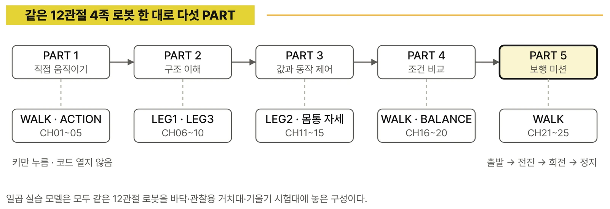

전체 목차

프롤로그와 이 책의 사용법, 시작하기를 거쳐 5개 PART·25개 CHAPTER로 이어집니다. 각 CHAPTER는 세 개의 실습 절과 「실습 안내」로 구성됩니다.
시작 전
- 이 책에서 해낼 것
대표 미션 — 일어서기 → 걷기 → 방향 바꾸기 → 다시 걷기 → 목표 지점에서 멈추기 - 프롤로그
바퀴 대신 다리로 걷는다는 것 - 이 책의 사용법
완성된 보행을 먼저 실행하고, 값은 한 번에 하나만 바꿉니다 - 시작하기
RoboCo 실습 환경 준비와 첫 실행 — 일곱 실습 모델과 시작 파일
PART 1 · EXPERIENCE
직접 움직여 보기 — 네 다리 로봇의 첫 걸음
코드를 열지 않고 WALK의 방향 키와 ACTION의 숫자 키만으로 걷기와 몸짓을 경험합니다.
- CHAPTER 01. 네 다리 로봇을 첫걸음부터 걷게 하기
1.1 QUAD-01 실습용 완성 로봇 불러오기
1.2 일어서기·전진·정지 실행하기
1.3 발이 움직이고 몸통이 따라가는 모습 보기 - CHAPTER 02. 일어서기·앉기·기지개 자세 세 가지
2.1 Stand·Sit·Stretch 동작 실행하기
2.2 자세가 끝나면 다음 동작 골라 보기
2.3 손 흔들기와 스트레칭에서 다른 움직임 찾기 - CHAPTER 03. 키로 만나는 여러 가지 걸음
3.1 WALK의 여섯 방향 키 익히기
3.2 자동 모드 1·2·3 감상하기
3.3 걸음의 크기와 빠르기는 어떻게 보일까 - CHAPTER 04. 전진·회전·정지 보행
4.1 전진·회전·정지 동작 실행하기
4.2 몸통이 보는 방향을 바꾸어 보기
4.3 멈췄다가 다시 조작하는 흐름 익히기 - CHAPTER 05. 마음대로 움직이는 자유 조작
5.1 WALK에서 마음에 드는 움직임 골라 보기
5.2 ACTION에서 마음에 드는 몸짓 골라 보기
5.3 두 로봇의 키 조작 방식에 익숙해지기
PART 2 · UNDERSTAND
움직임의 구조 이해 — 열두 관절이 한 걸음이 되는 구조
거치대 위의 다리 하나에서 관절 축을 확인하고, 네 다리·열두 서보·좌우 대칭·제어 단계·좌표 기준을 정리합니다.
- CHAPTER 06. 다리 하나는 어디까지 움직일 수 있을까 (3자유도)
6.1 3자유도 다리가 움직이는 범위 보기
6.2 관절 축과 움직임 방향 확인하기
6.3 실제 축을 확인한 뒤 이름 붙이기 - CHAPTER 07. 네 다리 위치와 부품 연결표
7.1 앞왼쪽·앞오른쪽·뒤왼쪽·뒤오른쪽 다리 정하기
7.2 열두 ServoMotor의 부품 이름 확인하기
7.3 한 관절부터 연결 오류 찾기 - CHAPTER 08. 같은 각도인데 다리가 다르게 움직이는 이유 (대칭·방향)
8.1 같은 각도에도 달라지는 실제 움직임 보기
8.2 왼쪽과 오른쪽 다리의 대칭 설정하기
8.3 반대로 움직이는 다리 고치기 - CHAPTER 09. 서보에서 보행까지의 제어 단계
9.1 ServoMotor가 관절을 움직이는 과정 보기
9.2 관절이 다리 자세를 만드는 과정 보기
9.3 네 다리가 걸음 패턴을 만드는 과정 보기 - CHAPTER 10. 네 다리가 같은 방향을 보게 하기 (좌표 기준)
10.1 X·Y·Z 축과 원점 확인하기
10.2 몸통 좌표와 다리별 좌표 나누기
10.3 발 위치를 같은 기준으로 읽기
PART 3 · CONTROL
값과 동작 제어 — 발 위치를 바꾸어 자세 만들기
발끝 목표 위치와 IK, 계산값과 실제 자세의 비교, 작업 범위와 관절 한계, 네 다리와 몸통 자세를 다룹니다.
- CHAPTER 11. 발 목표 위치 바꾸기
11.1 FOOT_X·FOOT_Y·FOOT_Z 값 찾기
11.2 한 축씩 바꾸어 발 움직이기
11.3 목표 발 위치와 실제 발 움직임 비교하기 - CHAPTER 12. 로봇이 스스로 다리 각도를 계산하게 하기 (IK)
12.1 다리 길이와 관절 각도의 관계 보기
12.2 발 목표 위치를 관절 각도로 바꾸기
12.3 IK가 숨겨진 계산으로 끝나지 않게 추적하기 - CHAPTER 13. 계산한 각도와 실제 다리 자세 비교
13.1 IK의 입력과 출력 확인하기
13.2 계산한 각도를 ServoMotor 명령으로 보내기
13.3 계산값과 실제 자세 비교하기 - CHAPTER 14. 다리가 닿지 않는 곳을 미리 알아내기 (작업 범위·한계)
14.1 다리가 닿을 수 있는 목표 위치 찾기
14.2 범위 밖 목표 위치에서 일어나는 일 보기
14.3 IK 계산·한계 확인·명령 순서 지키기 - CHAPTER 15. 네 다리와 몸통 자세 함께 바꾸기
15.1 네 발 목표 위치를 함께 정하기
15.2 몸통 높이와 다리 길이 연결하기
15.3 Roll·Pitch·Yaw 자세 만들기
PART 4 · EXPERIMENT
조건 변경과 결과 비교 — 더 안정적인 걸음 찾기
높이·기울기·전환 속도·발 경로·보폭과 걸음 주기를 한 번에 하나씩 바꿔 비교합니다. 기울기 시험대의 IMU·PID는 선택 실습입니다.
- CHAPTER 16. 높이가 달라지면 얼마나 안정적으로 설까
16.1 낮음·기준·높음 자세로 서 보기
16.2 관절 각도와 바닥 사이 높이 비교하기
16.3 가장 안정적인 자세 찾기 - CHAPTER 17. 몸통 기울기와 회전 자세 비교
17.1 좌우 기울기(Roll) 바꾸기
17.2 앞뒤 기울기(Pitch) 바꾸기
17.3 회전 자세(Yaw)에서 발 위치 나누기 - CHAPTER 18. 자세를 바꾸는 속도 비교
18.1 일어서기·앉기·기지개 자세 만들기
18.2 자세를 바꾸는 시간을 바꾸기
18.3 빠른 전환과 안전한 전환 비교하기 - CHAPTER 19. 지지 다리와 움직이는 다리의 발 경로
19.1 바닥을 지지하는 다리와 움직이는 다리 구분하기
19.2 들기·옮기기·내리기 경로 만들기
19.3 발 들어 올리는 높이와 착지 결과 비교하기 - CHAPTER 20. 보폭·속도·걸음 주기 비교
20.1 보폭만 바꾸어 보기
20.2 속도와 걸음 주기만 바꾸어 보기
20.3 이동 거리·기울기·넘어진 횟수 비교하기
PART 5 · PROJECT
미션 완성 및 개선 — 4족 보행 미션
걸음 주기와 다리 순서, 전진과 후진, 좌우 회전, 넘어짐 복구를 거쳐 최종 미션을 반복 실행하고 개선합니다.
- CHAPTER 21. 걸음 주기와 다리 순서 만들기
21.1 한 걸음에서 지지·움직임 순서 정하기
21.2 네 다리의 움직일 차례 정하기
21.3 실행 기록으로 네 다리 따라가기 - CHAPTER 22. 앞으로 걷기와 뒤로 걷기
22.1 발 경로의 진행 방향 바꾸기
22.2 전진과 후진에 맞는 값 정하기
22.3 걷기 시작과 멈추기 연결하기 - CHAPTER 23. 왼쪽과 오른쪽으로 돌기
23.1 좌우 보폭 차이 만들기
23.2 몸통 회전과 회전 반경 비교하기
23.3 직진 뒤 회전하는 동작 순서 만들기 - CHAPTER 24. 넘어지는 로봇을 다시 걷게 하기 (오류·복구)
24.1 연결 위치·방향·각도 오류 찾기
24.2 IK·관절 한계·발 경로 오류 찾기
24.3 안전 정지·일어서기·다시 실행하기 - CHAPTER 25. 4족 보행 최종 미션
25.1 일어서기·걷기·회전·걷기·정지 실행하기
25.2 반복 실행으로 걸음 완성률 기록하기
25.3 변경 전후 보행 개선 확인하기
마무리
- 에필로그
열두 관절이 한 걸음이 되기까지 - 부록 A 실행·연결 빠른 참고표
- 부록 B 모델별 키맵과 정지·복귀·종료 규칙
- 부록 C IK 작업 범위·관절 한계·예외 처리 기록표
- 부록 D 실험 기록표와 최종 미션 체크시트
- 부록 E 걸음 패턴 조절 값과 보행 오류 진단표
- 부록 F 관절·좌표·보행 용어와 단위